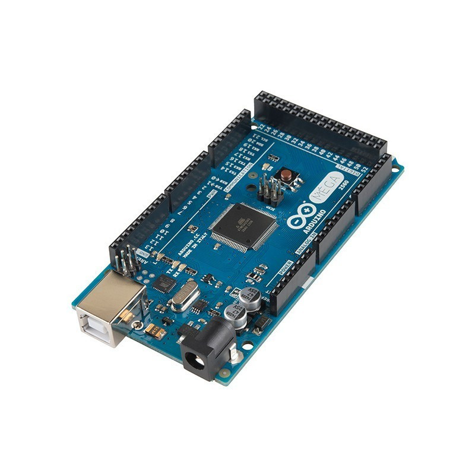
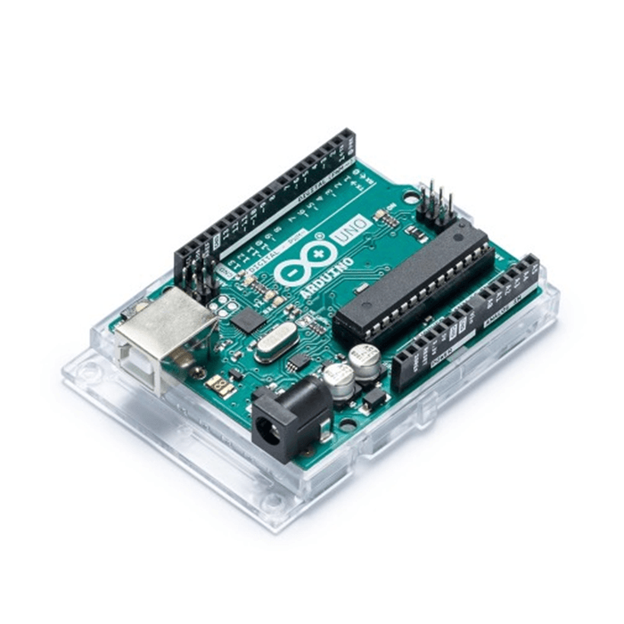
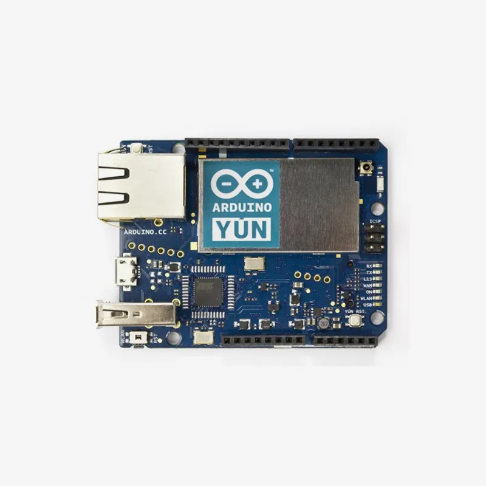
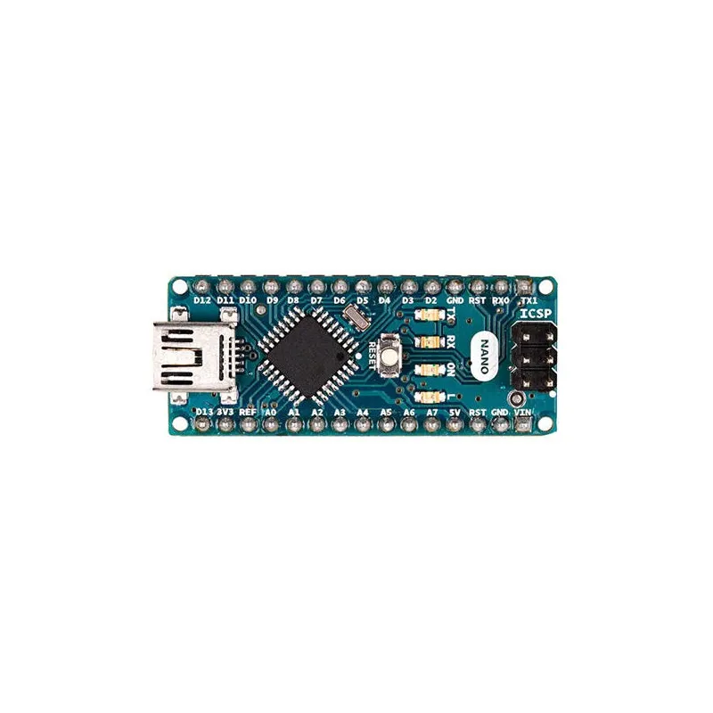
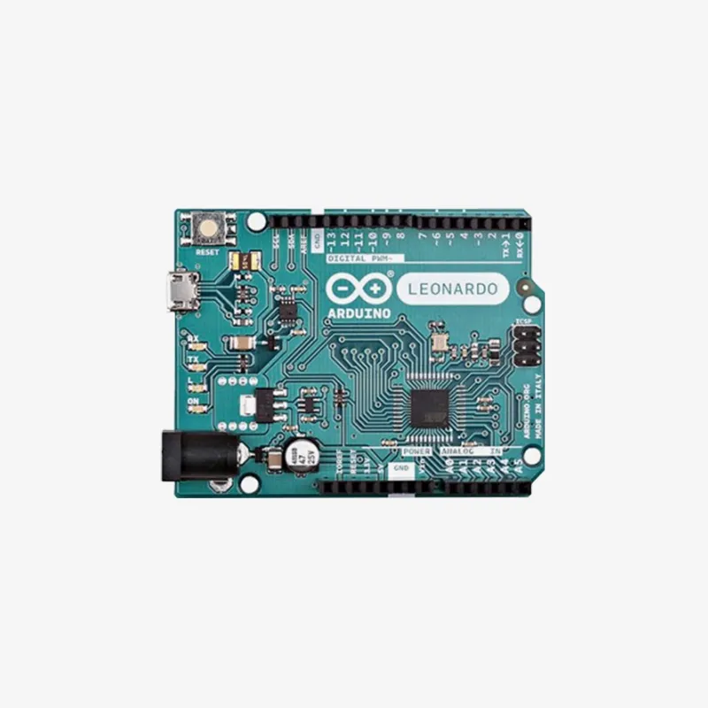

Arduino Uno
El Arduino Uno es una de las placas más populares y versátiles. Ideal para principiantes y proyectos intermedios.
Arduino Mega
El Arduino Mega ofrece más pines y memoria que el Uno, adecuado para proyectos más complejos.
Arduino Yun
El Arduino Yún es una placa que combina la capacidad de un Arduino con un microprocesador Linux, facilitando la conexión a redes WiFi para proyectos de Internet de las Cosas (IoT).
Arduino Nano
El Arduino Nano es una placa microcontroladora pequeña, basada en el ATmega328P, ideal para proyectos compactos debido a su tamaño reducido y versatilidad.
Arduino leonardo
El Arduino Leonardo es una placa microcontroladora basada en el ATmega32u4, destacada por tener una interfaz USB integrada, lo que permite emular dispositivos USB como teclados y ratones.
Comentarios